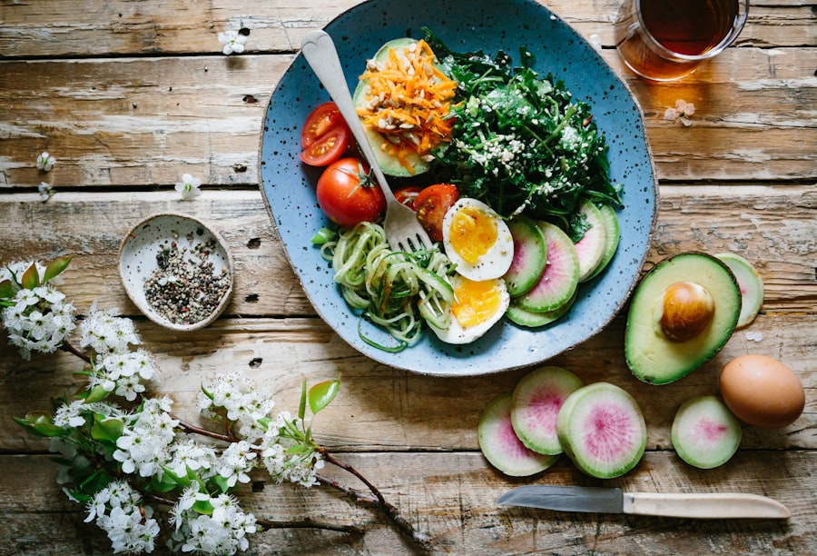
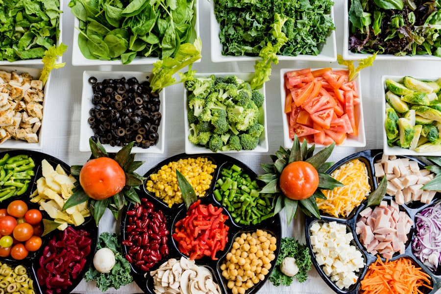

Services
專業服務項目
依據您的健康狀況與目標，量身打造專屬的營養管理方案

個人化飲食規劃
根據您的健康狀況、生活習慣和目標，量身打造專屬的飲食計劃，幫助您建立健康的飲食習慣。我們考慮您的食物偏好、過敏源和營養需求，確保飲食計劃既健康又實用。

體重管理諮詢
提供科學的減重或增重方案，結合營養學知識和行為改變策略，幫助您達到理想的體重目標。我們的方法強調健康且可持續的體重管理，而非短期的極端減重。

慢性病營養指導
針對糖尿病、高血壓、高血脂等慢性疾病，提供專業的飲食建議。通過飲食管理改善健康指標，減少藥物依賴，提高生活品質。
規劃保健食品
根據您的健康需求與目標，提供專業的保健食品建議，選擇適合的產品來補充營養，提升健康狀態。